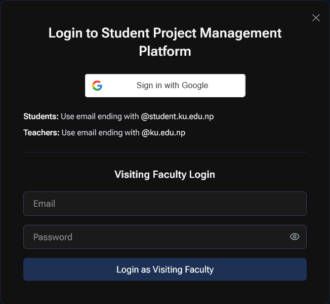

KUnify is a comprehensive Student Project Management Platform designed to streamline the project lifecycle for
students, teachers, and administrators at Kathmandu University. It facilitates team formation, proposal
submission, supervisor allocation, and progress tracking through weekly logs.
Key Features
Role-based Access Control: Dedicated portals for Students, Teachers, and Admins.
Team Management: Easy team creation and joining via unique codes.
Project Workflow: Seamless proposal submission and supervisor request system.
Progress Tracking: Weekly logsheets for continuous monitoring.
Notifications: Real-time updates on requests and status changes.
2. Getting Started
Accessing the Platform
Open your web browser and navigate to the application URL (e.g., http://spmp.ku.edu.np).
Login

Students: Click "Sign in with Google" using your @student.ku.edu.np email.
Teachers: Click "Sign in with Google" using your @ku.edu.np email.
Admins / Visiting Faculty: Use the email/password login form.
3. Student Guide
3.1 Profile Setup
Upon your first login, you must complete your profile.
Department: Select your department (e.g., Computer Science).
Semester: Choose your current semester.
Registration Number: Enter your university registration number.
Subject Code: Enter the relevant project subject code.
Click Submit to save your profile.
3.2 Dashboard Overview
Your dashboard is the central hub for all your project activities.
3.3 Team Formation
You cannot work alone; you must be part of a team.
Creating a Team
Click the + (Plus) icon in the top navigation bar.
Select Create Team.
Enter a Team Name.
You will receive a unique Team Code. Share this with your teammates.
Joining a Team
Click the + (Plus) icon.
Select Join Team.
Enter the Team Code provided by your team leader.
Click Join.
3.4 Submitting a Proposal & Requesting Supervisor
Once your team is formed, you can submit a project proposal and request a supervisor in a single step.
Navigate to the Dashboard.
Click Submit Proposal.
Fill in the Title, Description (Abstract), and Keywords.
Select a Supervisor from the dropdown list.
Upload any necessary files (PDFs, max 2MB).
Click Submit Request.
3.5 Weekly Logs
Once you have an approved project and supervisor:
Go to the Logsheet tab.
Click Add New Log.
Enter the details of your work for the week.
Submit for supervisor review.
4. Teacher Guide
The Teacher Portal is designed to help faculty members manage student projects, review proposals, and track
progress. The sidebar navigation provides access to the following key sections:
4.1 Profile Setup
Before accessing the dashboard, new teachers must complete their profile.
Full Name: View your name as registered in the system.
Phone Number: Enter your contact number.
Specialization: Provide details about your expertise.
4.2 Dashboard
The Dashboard serves as the landing page, offering a high-level overview of your supervision
activities.
Quick Stats: View the total number of active teams, pending requests, and alerts.
Recent Activity: See the latest updates from your supervised teams.
4.3 Team Projects
View a comprehensive list of all teams under your supervision. The table displays key details such as Team Name,
Project Title, and current Status.
My Teams: Browse the list of teams assigned to you.
Project Details: Click on a team to view their detailed workspace, members, and progress.
Weekly Logs: Access and grade weekly progress logs submitted by students.
4.4 Team Requests
Manage incoming supervision requests from student teams here.
Pending Proposals: Review project proposals that have requested you as a supervisor.
Action: Accept or Reject proposals based on your interest and capacity.
History: View a history of your accepted and rejected requests.
4.5 Team Deficits
Quickly identify teams that are falling behind. This section highlights teams with missing weekly logs or pending
deliverables.
Missing Logs: See which teams haven't submitted their required weekly updates.
Performance Alerts: Get notified about teams that need immediate attention.
Intervention: Use this information to follow up with students directly.
4.6 Settings
Manage your account and profile preferences.
Profile: Update your contact information, specialization, and availability.
Account: Change your password or manage notification preferences.
5. Admin Guide
The Admin Panel provides comprehensive control over the platform's users and projects. The sidebar navigation
includes:
5.1 Dashboard
The Dashboard provides a high-level overview of the system's current status. Key metrics include
the total number of registered Students, Teachers, and Active Projects.
Overview: Visual summary of platform usage and user growth.
System Health: Monitor the overall activity and status of the project management system.
5.2 Teachers
Manage the faculty members registered in the system.
View All: See a complete list of registered teachers.
Verification: Approve new teacher accounts.
Management: Deactivate or update teacher profiles if necessary.
Visiting Faculty Management
Admins can specifically manage visiting faculty members who may not have standard university credentials.
Add Visiting Faculty: Click the "Add Visiting Faculty" button to register external
supervisors.
Tabs: Switch between "Regular Faculty" and "Visiting Faculty" tabs to view respective
lists.
5.3 Teams Management
Admins can oversee all student teams and manage project assignments directly.
Unassigned Teams
View teams that have formed but do not yet have a supervisor assigned.
List View: Shows Team Name, Department, and Semester.
Actions: Click the "Assign" button to manually assign a supervisor to a team.
Assigned Teams
View teams that have already been assigned a supervisor.
Project Details: Displays the project title and assigned supervisor.
Monitoring: informational view to track adequate supervision coverage.
5.4 Students
Manage student accounts and details.
Student List: View all students filtered by batch or department.
Account Status: Verify or manage student access.
5.5 Requests
Handle system-level requests and notifications.
Pending Actions: Review requests that require administrative approval.
Notifications: Check the badge count (e.g., "1") for urgent items.
6. Troubleshooting
Login Issues
Ensure you are using the correct university email domain.
Clear your browser cookies/cache if you get a "Session Expired" error.
Contact the system administrator if the issue persists.
Team Issues
If you cannot join a team, check if the Team Code is correct.
Ensure the team is not already full (max 4 members).